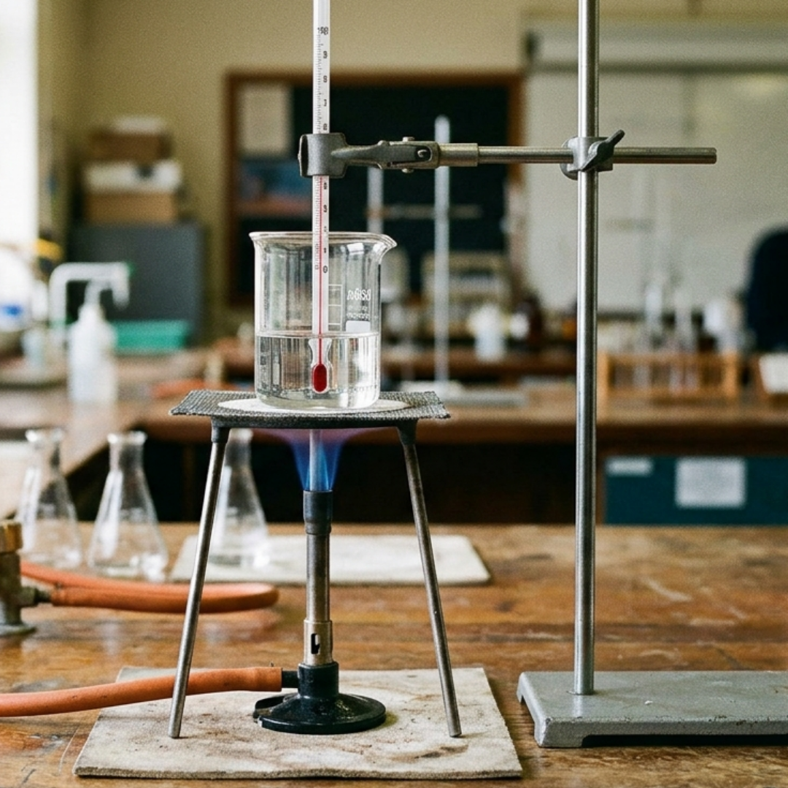
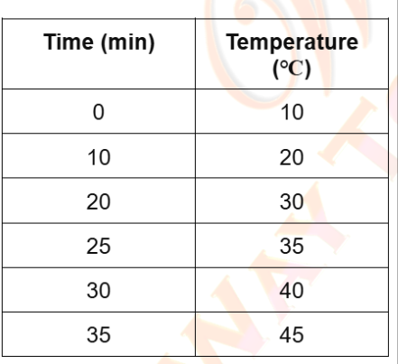
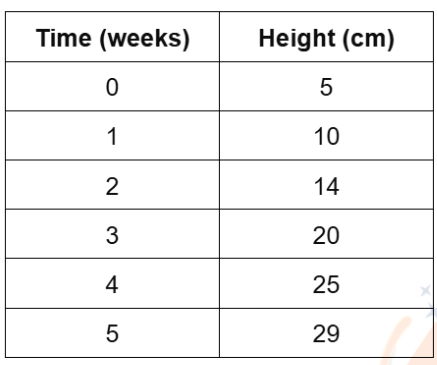
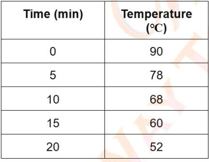
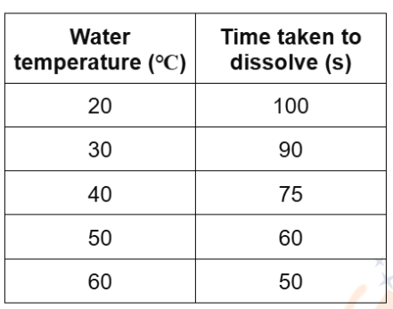

Instructions
- Open your Science Homework Folder in Google Drive.
- On the left hand side click on New-> Google Docs.
- Click on the blank box at the top left-hand corner that says 'Untitled doc' and name your document.
- Once done, write your answers/ observations for the tasks mentioned below.
Drawing Diagrams
Q1. The diagram below shows a laboratory setup.

Draw a clear scientific diagram of the setup and label each part correctly.
Q2. The table below shows the temperature of oil measured at different times while it was being heated.

Using the data provided, plot the results on a suitable line graph.
Include a title and correctly labelled axes with appropriate units.
Q3. The table shows the height of a plant measured over a period of 5 weeks.

Using the data provided, draw a suitable line graph.
Include a title and correctly labelled axes with appropriate units.
Q4. The table shows the temperature of hot water measured at regular time intervals as it cools.

Plot the data on a suitable line graph.
Include a title and correctly labelled axes with appropriate units.
Q5. The table shows the time taken for sugar to dissolve in water at different temperatures.

Using the data provided, draw a suitable graph to show the relationship between water temperature and the time taken for sugar to dissolve.
Include a title and correctly labelled axes with units.
RESEARCH WORK
Task: Suggest a testable hypothesis that you think may be true.
Describe a scientific investigation you could carry out to test your hypothesis.
(You may use your own ideas or a daily-life example.)